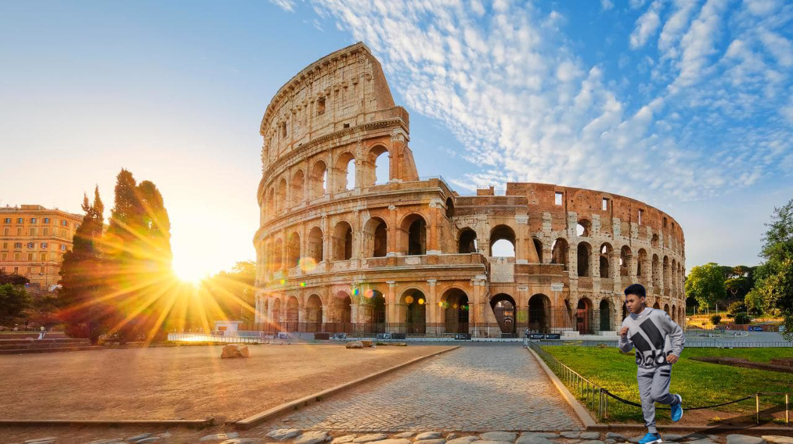
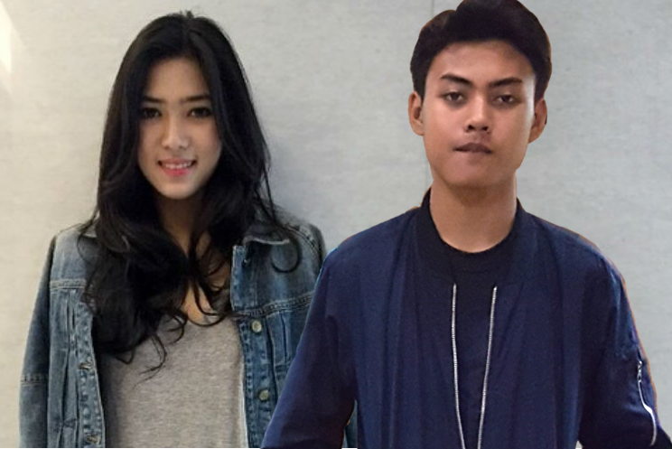

Nama saya Khabieb, iya hanya Khabieb tidak ada embel embel lainnya saya biasa dipanggil "Habib". Saya lahir di Bogor Tanggal 24 Bulan Agustus Tahun 2001. Sekarang saya tinggal di Perumahan Puri Nirwana 1 Blok L-3 RT 02 RW 14 Kelurahan Pabuaran, Kecamatan Cibinong, Kabupaten Bogor, Provinsi Jawa Barat, Negara Indonesia, Asia Tenggara, Benua Asia, Planet Bumi, Galaksi Bima Sakti. Saya adalah seorang pelajar di SMK-SMAK Bogor. Agama saya islam dan saya seorang laki-laki
Setelah usai menamatkan Sekolah Dasar, saya melanjutkan Sekolah Menengah Pertama di Bogor. Saya tinggal di Bogor tidak hanya menamatkan SMP. Saya harus melanjutkan Sekolah ke jenjang yang lebih tinggi pula.
Saya ingin kuliah di Universitas Gajah Mada Fakultas kimia. Sekarang saya masih sekolah di SMK-SMAK Bogor. Inilah biografi diri saya, semoga bisa menjadi inspirasi bagi siapapun yang membaca.
Hobby
Saya meiliki banyak hobi diantaranya adalah menyanyi, menari, bermain sepak bola, memasak, dan membaca Al Qur'an.

Ini adalah foto salah satu hobby saya yaitu jogging.
Idola
Saya juga memiliki idola dan salah satu idola saya adalah Isyana Sarasvati
Dan ini adalah foto saya bersama salah satu idola saya yaitu Isyana Sarasvati